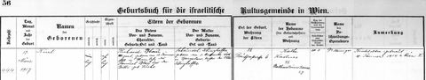

Kurt Blau
1917–1976
Life events
| Born | |
|---|---|
| Lived | 1925 · 1200 Rauscherstrasse 6, Apt. 23, Vienna, Austria Map |
| Departure | |
| Departure | |
| Departure | |
| Lived | |
| Died | 9 Dec 1976 · 1170 Dürauergasse 9, Vienna, Austria Map · Long/lat: 48.22356281233472, 16.3076138416924 |
| Buried | 14 Dec 1976 · Zentralfriedhof Tor IV, 1110 Simmeringer Hauptstrasse 246, Vienna, Austria Map · Group: 15 Row: 14 Grave: 14 |
Family


Photos

Kurt Blau
Anna Maria Schepan
Teresa Feldman
Josef Blau
Betti Borbola Fuchs
Samuel Blau
Ilonka 'Helen' Blau
+13 more
Scheindel 'Charlotte' Klinghoffer
Kurt Blau
Siegfried Blau

Kurt Blau
Grete Stör

Richard Blau
Kurt Blau
Josef 'Joshi' Blau
Grete Stör
Kurt Blau

Kurt Blau
Kurt Blau

Kurt Blau

Kurt Blau